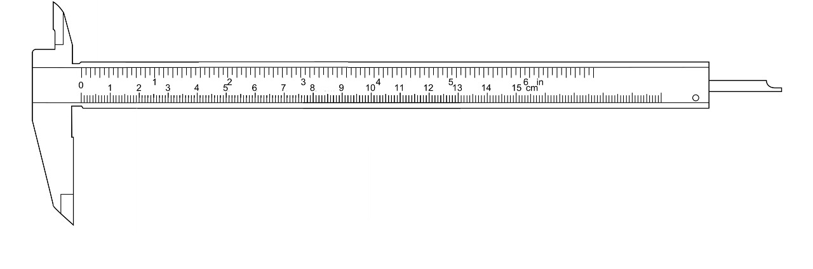
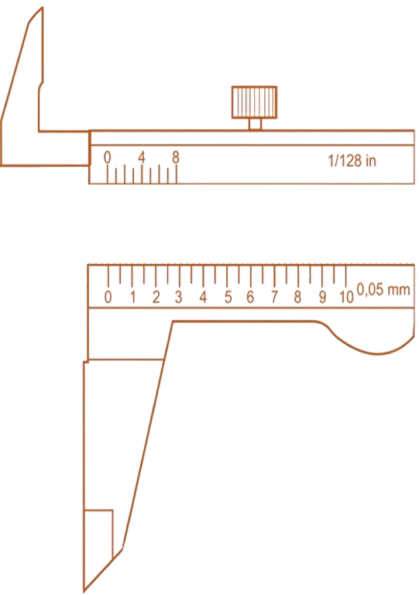

Introduction
Go to Internal Measurement
External Workpiece Measurement
Select a workpiece to measure


⭕ Circle
⬜ Square
▭ Rectangle
Measurement Calculation
MSR = -- mm
VSR = VSC × LC = -- × 0.05 = -- mm
TR = MSR + VSR = -- mm